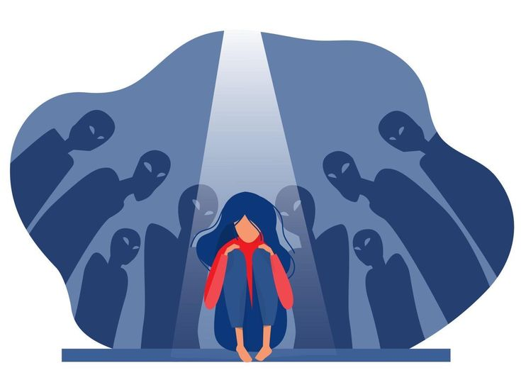
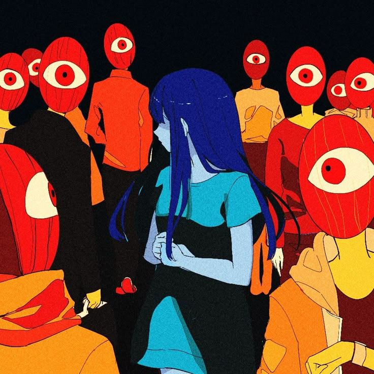

Apa Itu Bullying dan Mengapa Berbahaya?
Bullying bukan sekadar candaan. Ketahui pengertian, jenis, dan dampak serius yang ditimbulkannya.
Jenis-Jenis Bullying yang Sering Terjadi di Sekolah
Bullying fisik, verbal, sosial, hingga cyber bullying yang sering tidak disadari.

Dampak Bullying terhadap Kesehatan Mental
Dampak jangka pendek dan panjang bullying terhadap mental dan kepercayaan diri korban.

Cara Mencegah Bullying di Lingkungan Sekolah
Peran siswa, guru, dan orang tua dalam menciptakan lingkungan yang aman.